Armes, outils et munitions
Armes, outils et munitions dans Valheim – 200 objets avec biome, provenance, outil requis, recette et utilisation.
Aucun objet trouvé.
 Appât de pêche
Appât de pêche
Un appât de pêche ordinaire de dvergr. Canne à pêche vendue séparément.
Provenance
- Acheter: Haldor · 10 pièces (× 20)
- Ramasser: Grotte de givre · 2–4 ×
Utilisation
- Ingrédient pour: Appât de pêche brumeux, Appât de pêche chaud, Appât de pêche froid, Appât de pêche gelé, Appât de pêche lourd, Appât de pêche moussu, Appât de pêche odorant, Appât de pêche piquant
- Appât pour: Brochet, Perche
 Appât de pêche brumeux
Appât de pêche brumeux
Cet appât guide les poissons jusqu'à vous à travers les eaux.
Provenance
- Fabriquer: 20 × Table de préparation culinaire à partir de 20 × Appât de pêche, 1 ×
 Trophée de lox
Trophée de lox
Utilisation
- Appât pour: Poisson-globe, Poisson-pêcheur
 Appât de pêche chaud
Appât de pêche chaud
Certains poissons apprécient l'eau chaude, et cet appât fait monter la température jusqu'à ébullition.
Provenance
- Fabriquer: 20 × Table de préparation culinaire à partir de 20 × Appât de pêche, 1 ×
 Trophée de guerrier
Trophée de guerrier
Utilisation
- Appât pour: Poisson-magma
 Appât de pêche froid
Appât de pêche froid
Cet appât ne paie pas de mine, mais c'est un vrai régal pour les poissons qui habitent les eaux sombres et gelées.
Provenance
- Fabriquer: 20 × Table de préparation culinaire à partir de 20 × Appât de pêche, 1 ×
 Trophée de fenring
Trophée de fenring
Utilisation
- Appât pour: Tétra
 Appât de pêche gelé
Appât de pêche gelé
Cet appât n'est pas très nourrissant. Il n'intéressera que les poissons qui ont l'habitude de ne manger que de la glace.
Provenance
- Fabriquer: 20 × Table de préparation culinaire à partir de 20 × Appât de pêche, 1 ×
 Trophée de drac
Trophée de drac
Utilisation
- Appât pour: Saumon nordique
 Appât de pêche lourd
Appât de pêche lourd
Cet appât coule assez profondément pour attirer les poissons qui rôdent dans les fonds marins.
Provenance
- Fabriquer: 20 × Table de préparation culinaire à partir de 20 × Appât de pêche, 1 ×
 Trophée de serpent
Trophée de serpent
Utilisation
- Appât pour: Thon, Vieille de corail
 Appât de pêche moussu
Appât de pêche moussu
Les cadavres de trolls de la forêt attirent souvent un poisson ou deux. Accélérez le processus avec cet appât !
Provenance
- Fabriquer: 20 × Table de préparation culinaire à partir de 20 × Appât de pêche, 1 ×
 Trophée de troll
Trophée de troll
Utilisation
- Appât pour: Poisson-troll
 Appât de pêche odorant
Appât de pêche odorant
Il sent peut-être mauvais, mais les poissons qu'attire cet appât sont habitués à bien pire.
Provenance
- Fabriquer: 20 × Table de préparation culinaire à partir de 20 × Appât de pêche, 1 ×
 Trophée d'abomination
Trophée d'abomination
Utilisation
- Appât pour: Guinée saumon
 Appât de pêche piquant
Appât de pêche piquant
Si vous n'êtes pas insensible aux piqûres de morstiques, les poissons ne sont pas insensibles à cette friandise !
Provenance
- Fabriquer: 20 × Table de préparation culinaire à partir de 20 × Appât de pêche, 1 ×
 Trophée de gobelin
Trophée de gobelin
Utilisation
- Appât pour: Mérou
 Arbalète
Arbalète
Une arme lente, mais puissante.
Provenance
 Arbalète de givrefeu
Arbalète de givrefeu
Si vos adversaires restent de glace lorsque vous les visez, ils ne vont certainement pas se réchauffer quand vous les toucherez.
Provenance
- Fabriquer: Forge noire (niveau 4) à partir de 1 ×
 Arbalète nordique, 20 ×
Arbalète nordique, 20 ×  Or-sang, 1 ×
Or-sang, 1 ×  Essence de givrefeu · par amélioration: 10 × Or-sang, 1 × Essence de givrefeu
Essence de givrefeu · par amélioration: 10 × Or-sang, 1 × Essence de givrefeu
 Arbalète de sang-tonnerre
Arbalète de sang-tonnerre
Empreinte d'une puissance irréfrénable, sa corde tendue est pareille à l'air avant l'orage.
Provenance
- Fabriquer: Forge noire (niveau 4) à partir de 1 × Arbalète nordique, 20 × Or-sang, 1 ×
 Essence de sang-tonnerre · par amélioration: 10 × Or-sang, 1 × Essence de sang-tonnerre
Essence de sang-tonnerre · par amélioration: 10 × Or-sang, 1 × Essence de sang-tonnerre
Arbalète nordique
Une force incroyable est liée à cette arme et n'attend plus que d'être libérée.
Provenance
- Fabriquer: Forge noire (niveau 4) à partir de 20 × Or-sang, 1 ×
 Moule : arbalète nordique, 10 ×
Moule : arbalète nordique, 10 ×  Sapin nordique · par amélioration: 10 × Or-sang, 5 × Sapin nordique
Sapin nordique · par amélioration: 10 × Or-sang, 5 × Sapin nordique - Cuire: Fonderie à givre à partir de
 Moulage : arbalète nordique
Moulage : arbalète nordique
Utilisation
- Ingrédient pour: Arbalète de givrefeu, Arbalète de sang-tonnerre
 Arc
Arc
Un arc primitif mais fonctionnel.
Provenance
- Fabriquer: Table de fabrication à partir de 10 ×
 Bois, 8 ×
Bois, 8 ×  Bouts de cuir · par amélioration: 5 × Bois, 4 × Bouts de cuir, 1 ×
Bouts de cuir · par amélioration: 5 × Bois, 4 × Bouts de cuir, 1 ×  Peau de cerf
Peau de cerf
 Arc de bois noble
Arc de bois noble
Un arc simple et puissant fait de bois souple.
Provenance
- Fabriquer: Table de fabrication à partir de 10 ×
 Bois précieux, 10 ×
Bois précieux, 10 ×  Bois robuste, 2 × Peau de cerf · par amélioration: 5 × Bois précieux, 5 × Bois robuste, 2 × Peau de cerf
Bois robuste, 2 × Peau de cerf · par amélioration: 5 × Bois précieux, 5 × Bois robuste, 2 × Peau de cerf
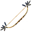
Arc de chasseUn ouvrage minutieux et une corde fiable, le rêve de tout chasseur.
Provenance
- Fabriquer: Forge à partir de 10 × Bois précieux, 20 ×
 Fer, 10 ×
Fer, 10 ×  Plumes, 2 × Peau de cerf · par amélioration: 5 × Bois précieux, 10 × Fer, 5 × Plumes, 2 × Peau de cerf
Plumes, 2 × Peau de cerf · par amélioration: 5 × Bois précieux, 10 × Fer, 5 × Plumes, 2 × Peau de cerf
 Arc de givrefeu
Arc de givrefeu
Gardez la tête froide lorsque vous visez, puis libérez votre fureur avec vos flèches.
Provenance
- Fabriquer: Forge noire (niveau 4) à partir de 1 ×
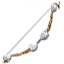
Arc nordique, 20 ×Or-sang, 1 × Essence de givrefeu · par amélioration: 10 × Or-sang, 1 × Essence de givrefeu
 Arc de sang-tonnerre
Arc de sang-tonnerre
Les éclairs dansent le long de sa corde, désireux d'être libérés.
Provenance
- Fabriquer: Forge noire (niveau 4) à partir de 1 × Arc nordique, 20 × Or-sang, 1 × Essence de sang-tonnerre · par amélioration: 10 × Or-sang, 1 × Essence de sang-tonnerre
Arc nordique
Cet arc trouvera sa cible avec une précision élégante.
Provenance
- Fabriquer: Forge noire (niveau 4) à partir de 20 × Or-sang, 1 ×
 Moule : arc nordique, 10 × Sapin nordique · par amélioration: 10 × Or-sang, 5 × Sapin nordique
Moule : arc nordique, 10 × Sapin nordique · par amélioration: 10 × Or-sang, 5 × Sapin nordique - Cuire: Fonderie à givre à partir de
 Moulage : arc nordique
Moulage : arc nordique
Utilisation
- Ingrédient pour: Arc de givrefeu, Arc de sang-tonnerre
 Argivre
Argivre
Les morts craignent l'argent. Rappelez-le leur.
Provenance
- Fabriquer: Forge (niveau 3) à partir de 10 ×
 Écorce ancienne, 30 ×
Écorce ancienne, 30 ×  Argent, 5 ×
Argent, 5 ×  Chair d'Ymir, 5 ×
Chair d'Ymir, 5 ×  Glande gelée · par amélioration: 15 × Argent
Glande gelée · par amélioration: 15 × Argent
 Arracheurs de chair
Arracheurs de chair
Si les griffes fonctionnent pour les loups, pourquoi pas pour un viking ?
Provenance
- Fabriquer: Forge (niveau 3) à partir de 10 ×
 Fourrure de Fenris, 6 ×
Fourrure de Fenris, 6 ×  Griffes de Fenris, 10 × Argent · par amélioration: 1 × Fourrure de Fenris, 1 × Griffes de Fenris, 1 × Argent
Griffes de Fenris, 10 × Argent · par amélioration: 1 × Fourrure de Fenris, 1 × Griffes de Fenris, 1 × Argent
 Atgeir de givrefeu
Atgeir de givrefeu
Laissez les flammes dévorantes faire la première partie du travail alors que la glace attaquera ce qu'il restera.
Provenance
- Fabriquer: Forge noire (niveau 4) à partir de 1 ×
 Atgeir nordique, 20 × Or-sang, 1 × Essence de givrefeu · par amélioration: 10 × Or-sang, 1 × Essence de givrefeu
Atgeir nordique, 20 × Or-sang, 1 × Essence de givrefeu · par amélioration: 10 × Or-sang, 1 × Essence de givrefeu
 Atgeir de sang-tonnerre
Atgeir de sang-tonnerre
Les cieux chantent vos louanges lorsque vous faites saigner vos ennemis.
Provenance
- Fabriquer: Forge noire (niveau 4) à partir de 1 × Atgeir nordique, 20 × Or-sang, 1 × Essence de sang-tonnerre · par amélioration: 10 × Or-sang, 1 × Essence de sang-tonnerre
 Atgeir en bois
Atgeir en bois
Il ne fait pas particulièrement mal, mais jouit d'une grande portée !
Provenance
- Coffres: Hutte fuling · 17 % de chance, Tour de pierre (Montagnes) · 17 % de chance, Ruine · 17 % de chance, Quête de Hildir : Tour scellée · 17 % de chance, Village fuling · 17 % de chance
 Atgeir en bronze
Atgeir en bronze
Un outil de véritable guerrier.
Provenance
- Fabriquer: Forge à partir de 10 × Bois, 8 ×
 Bronze, 2 × Bouts de cuir · par amélioration: 4 × Bronze
Bronze, 2 × Bouts de cuir · par amélioration: 4 × Bronze
 Atgeir en fer
Atgeir en fer
Il a soif de sang, brise des crânes et répand la mort.
Provenance
- Fabriquer: Forge (niveau 2) à partir de 10 × Bois, 30 × Fer, 2 × Bouts de cuir · par amélioration: 15 × Fer, 1 × Bouts de cuir
 Atgeir en sombracier
Atgeir en sombracier
Une hache au tranchant redoutable, faite d'un métal noir pratiquement incassable.
Provenance
- Fabriquer: Forge (niveau 4) à partir de 10 × Bois précieux, 30 ×
 Sombracier, 5 ×
Sombracier, 5 ×  Toile de lin · par amélioration: 15 × Sombracier, 5 × Toile de lin
Toile de lin · par amélioration: 15 × Sombracier, 5 × Toile de lin
Atgeir nordique
Le fil de cette arme est aussi mortel que brillant.
Provenance
- Fabriquer: Forge noire (niveau 4) à partir de 20 × Or-sang, 1 ×
 Moule : atgeir nordique, 10 × Sapin nordique · par amélioration: 10 × Or-sang, 5 × Sapin nordique
Moule : atgeir nordique, 10 × Sapin nordique · par amélioration: 10 × Or-sang, 5 × Sapin nordique - Cuire: Fonderie à givre à partir de
 Moulage : atgeir nordique
Moulage : atgeir nordique
Utilisation
- Ingrédient pour: Atgeir de givrefeu, Atgeir de sang-tonnerre
 Bardiche de givrefeu
Bardiche de givrefeu
Frappez vos adversaires avec un brasier glacé !
Provenance
- Fabriquer: Forge noire (niveau 4) à partir de 1 ×
 Bardiche nordique, 20 × Or-sang, 1 × Essence de givrefeu · par amélioration: 10 × Or-sang, 1 × Essence de givrefeu
Bardiche nordique, 20 × Or-sang, 1 × Essence de givrefeu · par amélioration: 10 × Or-sang, 1 × Essence de givrefeu
 Bardiche de sang-tonnerre
Bardiche de sang-tonnerre
Lorsque vous pourfendez vos ennemis, leur sang retentit tel l'orage.
Provenance
- Fabriquer: Forge noire (niveau 4) à partir de 1 × Bardiche nordique, 20 × Or-sang, 1 × Essence de sang-tonnerre · par amélioration: 10 × Or-sang, 1 × Essence de sang-tonnerre
Bardiche nordique
Une redoutable hache pour un redoutable guerrier.
Provenance
- Fabriquer: Forge noire (niveau 4) à partir de 20 × Or-sang, 1 ×
 Moule : bardiche nordique, 10 × Sapin nordique · par amélioration: 10 × Or-sang, 5 × Sapin nordique
Moule : bardiche nordique, 10 × Sapin nordique · par amélioration: 10 × Or-sang, 5 × Sapin nordique - Cuire: Fonderie à givre à partir de
 Moulage : bardiche nordique
Moulage : bardiche nordique
Utilisation
- Ingrédient pour: Bardiche de givrefeu, Bardiche de sang-tonnerre
 Bâton
Bâton
Une arme grossière mais utile.
Provenance
- Fabriquer: sans établi à partir de 6 × Bois · par amélioration: 5 ×
 Fragments d'os
Fragments d'os
Bâton de fracture
Patience et concentration seront nécessaires pour exploiter le véritable pouvoir de ce bâton.
Provenance
- Fabriquer: Table de galdr (niveau 2) à partir de 15 ×
 Os calciné, 5 ×
Os calciné, 5 ×  Cendrebois, 8 ×
Cendrebois, 8 ×  Poudre de proustite · par amélioration: 5 × Os calciné, 3 × Cendrebois, 1 × Poudre de proustite
Poudre de proustite · par amélioration: 5 × Os calciné, 3 × Cendrebois, 1 × Poudre de proustite
 Bâton de givre
Bâton de givre
Un bâton aussi froid que l'hiver de trois ans qui annoncera la fin des temps.
Provenance
- Fabriquer: Table de galdr à partir de 20 ×
 Bois d'Yggdrasil, 4 × Glande gelée, 16 ×
Bois d'Yggdrasil, 4 × Glande gelée, 16 ×  Eitr raffiné · par amélioration: 10 × Bois d'Yggdrasil, 2 × Glande gelée, 8 × Eitr raffiné
Eitr raffiné · par amélioration: 10 × Bois d'Yggdrasil, 2 × Glande gelée, 8 × Eitr raffiné
 Bâton de la nature
Bâton de la nature
D'anciennes forces naturelles reposent dans ce bâton, prêtes à être libérées.
Provenance
- Fabriquer: Table de galdr (niveau 2) à partir de 15 × Cendrebois, 10 ×
 Torse-tête, 3 ×
Torse-tête, 3 ×  Plume céleste, 1 ×
Plume céleste, 1 ×  Jade · par amélioration: 5 × Cendrebois, 2 × Torse-tête, 3 × Plume céleste, 1 × Jade
Jade · par amélioration: 5 × Cendrebois, 2 × Torse-tête, 3 × Plume céleste, 1 × Jade
 Bâton de protection
Bâton de protection
En échange d'une modeste offrande de sang, il protège son utilisateur d'un bouclier magique.
Provenance
- Fabriquer: Table de galdr à partir de 20 × Bois d'Yggdrasil, 4 ×
 Caillot de sang, 16 × Eitr raffiné · par amélioration: 10 × Bois d'Yggdrasil, 2 × Caillot de sang, 8 × Eitr raffiné
Caillot de sang, 16 × Eitr raffiné · par amélioration: 10 × Bois d'Yggdrasil, 2 × Caillot de sang, 8 × Eitr raffiné
 Bâton des braises
Bâton des braises
La chaleur torride de Muspelheim fait pâle figure à côté des capacités de ce bâton...
Provenance
- Fabriquer: Table de galdr à partir de 20 × Bois d'Yggdrasil, 4 ×
 Cœur de surtling, 16 × Eitr raffiné · par amélioration: 10 × Bois d'Yggdrasil, 2 × Cœur de surtling, 8 × Eitr raffiné
Cœur de surtling, 16 × Eitr raffiné · par amélioration: 10 × Bois d'Yggdrasil, 2 × Cœur de surtling, 8 × Eitr raffiné
 Bâton des trolls
Bâton des trolls
Invoque une bête enragée qui sème la mort et la destruction.
Provenance
- Fabriquer: Table de galdr (niveau 2) à partir de 15 × Os calciné, 1 × Trophée de troll, 3 ×
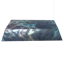
Flametal, 1 × Pierre-de-sang · par amélioration: 5 × Os calciné, 1 × Trophée de troll, 3 × Flametal, 1 × Pierre-de-sang
Pierre-de-sang · par amélioration: 5 × Os calciné, 1 × Trophée de troll, 3 × Flametal, 1 × Pierre-de-sang
 Bombe au basalte
Bombe au basalte
Avec une chaleur suffisante, se solidifie à l'explosion.
Provenance
- Fabriquer: 5 × Table de fabrication à partir de 1 ×
 Peau d'asksvin, 1 ×
Peau d'asksvin, 1 ×  Vessie d'asksvin, 3 × Poudre de proustite
Vessie d'asksvin, 3 × Poudre de proustite
 Bombe de bile
Bombe de bile
À manipuler avec précaution.
Provenance
- Fabriquer: 3 × Table de fabrication à partir de 1 ×
 Sève, 1 ×
Sève, 1 ×  Sac de bile, 3 ×
Sac de bile, 3 ×  Résine
Résine
 Bombe de blob : blob
Bombe de blob : blob
S'il y a donjon, il y a blob.
Provenance
- Fabriquer: Table de fabrication à partir de 1 ×
 Fiole à bouchon, 1 ×
Fiole à bouchon, 1 ×  Trophée de blob, 3 ×
Trophée de blob, 3 ×  Pâte inanimée
Pâte inanimée
 Bombe de blob : givre
Bombe de blob : givre
Si vous la tenez en main trop longtemps, vous pourriez perdre un membre.
Provenance
- Fabriquer: Table de fabrication à partir de 1 × Fiole à bouchon, 1 × Trophée de drac, 3 × Résine
 Bombe de blob : goudron
Bombe de blob : goudron
La substance poisseuse à l'intérieur frémit, comme pour vous mettre en garde.
Provenance
- Fabriquer: Table de fabrication à partir de 1 × Fiole à bouchon, 1 ×
 Trophée d'excroissance, 3 ×
Trophée d'excroissance, 3 ×  Goudron
Goudron
 Bombe de blob : lave
Bombe de blob : lave
Cette fiole est chaude au toucher, promettant une ardente destruction.
Provenance
- Fabriquer: Table de fabrication à partir de 1 × Fiole à bouchon, 10 ×
 Soufre, 10 × Poudre de proustite
Soufre, 10 × Poudre de proustite
 Bombe de blob : poison
Bombe de blob : poison
Si cette fiole se rompt, la prudence est de mise.
Provenance
- Fabriquer: Table de fabrication à partir de 1 × Fiole à bouchon, 1 ×
 Trophée de blob, 3 × Résine
Trophée de blob, 3 × Résine
 Bombe de blob : poison avancé
Bombe de blob : poison avancé
Il n'est pas recommandé d'en respirer les vapeurs.
Provenance
- Fabriquer: Table de fabrication à partir de 1 × Fiole à bouchon, 3 × Trophée de blob, 3 × Résine
 Bombe fumigène
Bombe fumigène
Tout le monde sait que l'on ne peut pas respirer dans la fumée.
Provenance
- Fabriquer: 10 × Table de fabrication à partir de 1 ×
 Fume-spore, 1 × Vessie d'asksvin
Fume-spore, 1 × Vessie d'asksvin
 Bombe puante
Bombe puante
La puanteur est insupportable.
Provenance
- Fabriquer: 5 × Table de fabrication à partir de 5 × Bouts de cuir, 5 ×
 Gadoue, 3 × Résine
Gadoue, 3 × Résine
 Boule de neige
Boule de neige
Bénéficie d'un aérodynamisme parfait...
Provenance
- Ramasser: Au sol ou à l’état sauvage · Grand nord
- Butin de: Naingris · Grand nord
- Fabriquer: 10 × sans établi à partir de 5 ×
 Glace
Glace
Utilisation
- Matériau de construction pour: Lanterne de neige
 Brise-cerf
Brise-cerf
Une arme digne des dieux ! Si vous en êtes frappé, vous le saurez...
Provenance
- Fabriquer: Table de fabrication (niveau 2) à partir de 20 × Bois robuste, 5 ×
 Trophée de cerf, 2 × Bouts de cuir · par amélioration: 5 × Bois robuste, 2 × Trophée de cerf, 1 × Bouts de cuir, 10 × Fragments d'os
Trophée de cerf, 2 × Bouts de cuir · par amélioration: 5 × Bois robuste, 2 × Trophée de cerf, 1 × Bouts de cuir, 10 × Fragments d'os
 Canne à pêche
Canne à pêche
Une canne à pêche classique de dvergr.
Provenance
- Acheter: Haldor · 350 pièces
- Ramasser: Grotte de givre
 Carreau calciné
Carreau calciné
Un os solide, transformé en un carreau mortel.
Provenance
- Fabriquer: 20 × Forge noire à partir de 2 × Os calciné, 8 × Cendrebois, 2 × Plumes
- Coffres: Bateau de pierres (tombe) · 5–11 × · 53 % de chance, Village du Nord · 5–11 × · 53 % de chance, Hutte (Nord) · 5–11 × · 52 % de chance, Camp de bûcherons · 5–11 × · 52 % de chance, Épave (Nord) · 3–13 × · 17 % de chance
 Carreau d'or-sang
Carreau d'or-sang
Un carreau formé de l'un des matériaux les plus solides de ce monde...
Provenance
- Fabriquer: 20 × Forge noire à partir de 1 × Or-sang, 8 × Sapin nordique, 2 × Plumes
 Carreau en carapace
Carreau en carapace
Un carreau lourd et solide.
Provenance
 Carreau en fer
Carreau en fer
Un projectile de fer résistant.
Provenance
 Carreau en os
Carreau en os
Un carreau rudimentaire en os jauni.
Provenance
- Fabriquer: 20 × Forge noire à partir de 8 × Fragments d'os, 2 × Plumes
 Carreau en sombracier
Carreau en sombracier
Un carreau étincelant en métal sombre.
Provenance
- Fabriquer: 20 × Forge noire (niveau 2) à partir de 2 × Sombracier, 8 × Bois, 2 × Plumes
 Chaînes de poing de givrefeu
Chaînes de poing de givrefeu
Léger risque d'engelure inévitable.
Provenance
- Fabriquer: Forge noire (niveau 4) à partir de 1 ×
 Chaînes de poing nordiques, 20 × Or-sang, 1 × Essence de givrefeu · par amélioration: 10 × Or-sang, 1 × Essence de givrefeu
Chaînes de poing nordiques, 20 × Or-sang, 1 × Essence de givrefeu · par amélioration: 10 × Or-sang, 1 × Essence de givrefeu
 Chaînes de poing de sang-tonnerre
Chaînes de poing de sang-tonnerre
Une fureur s'empare de vous lorsque vous maniez ces armes. Votre sang gronde comme le tonnerre dans vos oreilles... Cela semble adéquat.
Provenance
- Fabriquer: Forge noire (niveau 4) à partir de 1 × Chaînes de poing nordiques, 20 × Or-sang, 1 × Essence de sang-tonnerre · par amélioration: 10 × Or-sang, 1 × Essence de sang-tonnerre
Chaînes de poing nordiques
Enroulez le plus robuste des métaux autour de vos poings pour vous assurer que vos adversaires ressentent la puissance de vos coups.
Provenance
- Fabriquer: Forge noire (niveau 4) à partir de 20 × Or-sang, 1 ×
 Moule : chaînes de poing nordiques, 10 × Sapin nordique · par amélioration: 10 × Or-sang, 5 × Sapin nordique
Moule : chaînes de poing nordiques, 10 × Sapin nordique · par amélioration: 10 × Or-sang, 5 × Sapin nordique - Cuire: Fonderie à givre à partir de Moulage : chaînes de poing nordiques
Utilisation
- Ingrédient pour: Chaînes de poing de givrefeu, Chaînes de poing de sang-tonnerre
 Charge de braise
Charge de braise
Des braises piégées, prêtes à exploser. Faites attention.
Provenance
- Fabriquer: 10 × Table de fabrication à partir de 2 ×
 Peau de phoque, 1 ×
Peau de phoque, 1 ×  Braises
Braises
 Chope
Chope
Skål !
Provenance
- Fabriquer: Table de fabrication à partir de 5 × Bois précieux, 2 × Résine
 Chope dvergr
Chope dvergr
Elle peut contenir beaucoup d'hydromel !
Provenance
- Coffres: Mine infestée · 6,3 % de chance
- Ramasser: Tour de garde dvergr, Phare dvergr, La Reine
 Cierge magique
Cierge magique
C'est un bâton qui fait des étincelles. Joli, non ?
Provenance
- Acheter: Hildir · 150 pièces
 Corne d'hydromel d'Odin
Corne d'hydromel d'Odin
Les plus grands guerriers d'Odin méritent les meilleures boissons.
Provenance
- Fabriquer: Table de fabrication à partir de 4 × Bois précieux, 1 × Trophée de cerf, 2 × Résine
 Corne de la Célébration
Corne de la Célébration
Un an que nous sommes arrivés... Skål !
Provenance
- Fabriquer: Table de fabrication à partir de 2 × Bronze, 2 ×
 Peau de troll, 2 × Fer
Peau de troll, 2 × Fer
 Coup de tonnerre
Coup de tonnerre
Il vous suffit de pointer pour invoquer la fureur des cieux.
Provenance
- Fabriquer: Table de galdr (niveau 3) à partir de 10 × Or-sang, 5 ×
 Fils des Nornes, 1 × Essence de sang-tonnerre · par amélioration: 5 × Or-sang, 2 × Fils des Nornes, 1 × Essence de sang-tonnerre
Fils des Nornes, 1 × Essence de sang-tonnerre · par amélioration: 5 × Or-sang, 2 × Fils des Nornes, 1 × Essence de sang-tonnerre - Cuire: Fonderie à givre à partir de
 Moulage : Coup de tonnerre
Moulage : Coup de tonnerre
 Couteau de boucher
Couteau de boucher
Couteau de boucher conçu pour l'abattage des animaux apprivoisés.
Provenance
 Couteau en argent
Couteau en argent
Prêt à infliger les pires souffrances.
Provenance
- Fabriquer: Forge (niveau 3) à partir de 2 × Bois, 10 × Argent, 3 × Bouts de cuir, 2 × Fer · par amélioration: 1 × Bois, 5 × Argent, 1 × Bouts de cuir, 1 × Fer
 Couteau en bois
Couteau en bois
Certains diraient que ce couteau est juste bon à étaler du beurre.
Provenance
- Coffres: Bateau de pierres (tombe) · 8,7 % de chance
 Couteau en cuivre
Couteau en cuivre
Un couteau en cuivre scintillant.
Provenance
- Fabriquer: Forge à partir de 2 × Bois, 8 ×
 Cuivre · par amélioration: 4 × Cuivre, 8 ×
Cuivre · par amélioration: 4 × Cuivre, 8 ×  Œil de naingris
Œil de naingris
 Couteau en silex
Couteau en silex
Un outil fiable en silex aiguisé.
Provenance
- Fabriquer: Table de fabrication à partir de 2 × Bois, 4 ×
 Silex, 2 × Bouts de cuir · par amélioration: 2 × Silex
Silex, 2 × Bouts de cuir · par amélioration: 2 × Silex
 Couteau en sombracier
Couteau en sombracier
Une lame noire, solide et aiguisée.
Provenance
- Fabriquer: Forge (niveau 4) à partir de 4 × Bois précieux, 10 × Sombracier, 5 × Toile de lin · par amélioration: 4 × Sombracier, 5 × Toile de lin
 Croc de Cendre
Croc de Cendre
Revenu d'entre les cendres, cet arc détient une force inébranlable.
Provenance
- Fabriquer: Forge noire (niveau 3) à partir de 10 × Cendrebois, 16 × Os calciné, 5 × Flametal, 5 ×
 Croc de gueule-d'os · par amélioration: 5 × Cendrebois, 10 × Os calciné, 5 × Flametal, 5 × Croc de gueule-d'os
Croc de gueule-d'os · par amélioration: 5 × Cendrebois, 10 × Os calciné, 5 × Flametal, 5 × Croc de gueule-d'os
Utilisation
- Ingrédient pour: Croc des tempêtes, Croc sanglant, Croc sauvage
 Croc de draugr
Croc de draugr
Du bois sombre courbé par une corde en tendons. Une arme redoutable.
Provenance
- Fabriquer: Forge (niveau 2) à partir de 10 × Écorce ancienne, 20 × Argent, 2 × Peau de cerf, 10 ×
 Viscosité · par amélioration: 5 × Écorce ancienne, 10 × Argent, 2 × Peau de cerf, 2 × Viscosité
Viscosité · par amélioration: 5 × Écorce ancienne, 10 × Argent, 2 × Peau de cerf, 2 × Viscosité
 Croc des tempêtes
Croc des tempêtes
Que vos flèches filent aussi vite que l'éclair.
Provenance
- Fabriquer: Forge noire (niveau 4) à partir de 1 × Croc de Cendre, 5 × Flametal, 1 ×
 Iolite · par amélioration: 5 × Flametal, 1 × Iolite
Iolite · par amélioration: 5 × Flametal, 1 × Iolite
 Croc sanglant
Croc sanglant
Les flèches décochées par cet arc déchiquetteront la chair avec une férocité sans pareille.
Provenance
- Fabriquer: Forge noire (niveau 4) à partir de 1 × Croc de Cendre, 5 × Flametal, 1 × Pierre-de-sang · par amélioration: 5 × Flametal, 1 × Pierre-de-sang
 Croc sauvage
Croc sauvage
Tout comme la branche tortueuse fut faite pour chercher le soleil, cet arc fut créé pour abattre vos ennemis.
Provenance
- Fabriquer: Forge noire (niveau 4) à partir de 1 × Croc de Cendre, 5 × Flametal, 1 × Jade · par amélioration: 5 × Flametal, 1 × Jade
 Cultivateur
Cultivateur
Un outil de fermier pour labourer la terre.
Provenance
- Fabriquer: Forge à partir de 5 × Bois robuste, 5 × Bronze · par amélioration: 1 × Bois robuste, 1 × Bronze
 Dague de givrefeu
Dague de givrefeu
Une coupure infligée par cette lame mord comme la glace, mais brûle comme le feu.
Provenance
- Fabriquer: Forge noire (niveau 4) à partir de 1 ×
 Dague nordique, 20 × Or-sang, 1 × Essence de givrefeu · par amélioration: 10 × Or-sang, 1 × Essence de givrefeu
Dague nordique, 20 × Or-sang, 1 × Essence de givrefeu · par amélioration: 10 × Or-sang, 1 × Essence de givrefeu
 Dague de sang-tonnerre
Dague de sang-tonnerre
Cette lame, pourtant déjà couverte de sang, semble assoiffée.
Provenance
- Fabriquer: Forge noire (niveau 4) à partir de 1 × Dague nordique, 20 × Or-sang, 1 × Essence de sang-tonnerre · par amélioration: 10 × Or-sang, 1 × Essence de sang-tonnerre
Dague nordique
La dernière chose que verront vos ennemis, c'est un éclair doré.
Provenance
- Fabriquer: Forge noire (niveau 4) à partir de 20 × Or-sang, 1 ×
 Moule : dague nordique, 10 × Sapin nordique · par amélioration: 10 × Or-sang, 5 × Sapin nordique
Moule : dague nordique, 10 × Sapin nordique · par amélioration: 10 × Or-sang, 5 × Sapin nordique - Cuire: Fonderie à givre à partir de
 Moulage : dague nordique
Moulage : dague nordique
Utilisation
- Ingrédient pour: Dague de givrefeu, Dague de sang-tonnerre
 Démolisseur
Démolisseur
Cette puissante masse est impatiente de semer le chaos.
Provenance
- Fabriquer: Forge noire à partir de 10 × Bois d'Yggdrasil, 20 × Fer, 10 × Eitr raffiné · par amélioration: 2 × Bois d'Yggdrasil, 15 × Fer, 2 × Eitr raffiné
 Dundr
Dundr
Ce qui va se passer va peut-être vous choquer.
Provenance
- Fabriquer: Table de galdr (niveau 2) à partir de 10 × Cendrebois, 4 × Flametal, 3 × Plume céleste, 1 × Pierre-de-sang · par amélioration: 5 × Cendrebois, 2 × Flametal, 3 × Plume céleste, 1 × Pierre-de-sang
 Dyrnwyn
Dyrnwyn
L'épée brisée est de nouveau complète. Sa flamme brûle, nourrie par les souvenirs d'anciens guerriers.
Provenance
- Fabriquer: Forge noire (niveau 4) à partir de 1 ×
 Fragment de garde de Dyrnwyn, 1 ×
Fragment de garde de Dyrnwyn, 1 ×  Fragment de lame de Dyrnwyn, 1 ×
Fragment de lame de Dyrnwyn, 1 ×  Fragment de pointe de Dyrnwyn, 20 × Flametal, 1 × Pierre-de-sang · par amélioration: 10 × Flametal, 1 × Pierre-de-sang
Fragment de pointe de Dyrnwyn, 20 × Flametal, 1 × Pierre-de-sang · par amélioration: 10 × Flametal, 1 × Pierre-de-sang
 Échine brisée
Échine brisée
Ne tournez pas le dos à cet arc, il en vaut la peine.
Provenance
- Fabriquer: Forge noire à partir de 10 × Bois précieux, 40 × Fragments d'os, 10 × Eitr raffiné · par amélioration: 5 × Bois précieux, 20 × Fragments d'os
 Égorgeuse
Égorgeuse
Cette puissante lame se languit du sang de ses ennemis.
Provenance
- Fabriquer: Forge noire (niveau 3) à partir de 30 × Flametal, 5 × Peau d'asksvin, 3 ×
 Tendon de morgen · par amélioration: 15 × Flametal, 5 × Peau d'asksvin, 3 × Tendon de morgen
Tendon de morgen · par amélioration: 15 × Flametal, 5 × Peau d'asksvin, 3 × Tendon de morgen
Utilisation
- Ingrédient pour: Égorgeuse brutale, Égorgeuse flagellante, Égorgeuse primitive
 Égorgeuse brutale
Égorgeuse brutale
Si ça saigne, vous pouvez le tuer.
Provenance
- Fabriquer: Forge noire (niveau 4) à partir de 1 × Égorgeuse, 15 × Flametal, 1 × Pierre-de-sang · par amélioration: 15 × Flametal, 1 × Pierre-de-sang
 Égorgeuse flagellante
Égorgeuse flagellante
La foudre ancrée dans cette lame est capricieuse, toujours en quête de quelque chose à frapper.
Provenance
 Égorgeuse primitive
Égorgeuse primitive
Cette lame œuvre en harmonie avec les forces primitives de ce monde, aspirant à la mort et au carnage.
Provenance
 Épée de givrefeu
Épée de givrefeu
Des flammes dansent sur cette lame, mais sont-elles chaudes ou froides ?
Provenance
- Fabriquer: Forge noire (niveau 4) à partir de 1 ×
 Épée nordique, 20 × Or-sang, 1 × Essence de givrefeu · par amélioration: 10 × Or-sang, 1 × Essence de givrefeu
Épée nordique, 20 × Or-sang, 1 × Essence de givrefeu · par amélioration: 10 × Or-sang, 1 × Essence de givrefeu
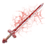
Épée de sang-tonnerreLorsque le sang coule le long de cette lame, la tempête en son sein s'éveille.
Provenance
- Fabriquer: Forge noire (niveau 4) à partir de 1 × Épée nordique, 20 × Or-sang, 1 × Essence de sang-tonnerre · par amélioration: 10 × Or-sang, 1 × Essence de sang-tonnerre
 Épée en argent
Épée en argent
Faite du métal le plus pur qui existe, elle viendra à bout de toutes les impuretés.
Provenance
- Fabriquer: Forge (niveau 3) à partir de 2 × Bois, 40 × Argent, 3 × Bouts de cuir, 5 × Fer · par amélioration: 1 × Bois, 20 × Argent, 1 × Bouts de cuir, 3 × Fer
 Épée en bois
Épée en bois
Une arme inoffensive, à moins d'être particulièrement persévérant.
Provenance
- Fabriquer: Table de fabrication à partir de 5 × Bois, 3 × Bois précieux, 2 × Bois robuste · par amélioration: 1 × Bois, 10 × Bois précieux, 2 × Bois robuste
 Épée en bronze
Épée en bronze
Buveuse de sang, une amie assoiffée.
Provenance
- Fabriquer: Forge à partir de 2 × Bois, 8 × Bronze, 2 × Bouts de cuir · par amélioration: 1 × Bois, 4 × Bronze, 1 × Bouts de cuir
 Épée en fer
Épée en fer
La ligne séparant la vie et la mort longe le fil de cette lame.
Provenance
- Fabriquer: Forge (niveau 2) à partir de 2 × Bois, 20 × Fer, 3 × Bouts de cuir · par amélioration: 1 × Bois, 10 × Fer, 2 × Bouts de cuir
 Épée en sombracier
Épée en sombracier
Une arme aussi belle que létale, luisant d'un éclat vert.
Provenance
- Fabriquer: Forge (niveau 4) à partir de 2 × Bois précieux, 20 × Sombracier, 5 × Toile de lin · par amélioration: 10 × Sombracier, 5 × Toile de lin
Épée nordique
Même lorsque le soleil pointe à peine le bout de son nez, cette arme brille.
Provenance
- Fabriquer: Forge noire (niveau 4) à partir de 20 × Or-sang, 1 ×
 Moule : épée nordique, 10 × Sapin nordique · par amélioration: 10 × Or-sang, 5 × Sapin nordique
Moule : épée nordique, 10 × Sapin nordique · par amélioration: 10 × Or-sang, 5 × Sapin nordique - Cuire: Fonderie à givre à partir de
 Moulage : épée nordique
Moulage : épée nordique
Utilisation
- Ingrédient pour: Épée de givrefeu, Épée de sang-tonnerre
 Espadon de givrefeu
Espadon de givrefeu
Vous n'aurez plus à choisir entre un coup de grâce ardent ou glacial... vous pourrez infliger les deux à la fois.
Provenance
- Fabriquer: Forge noire (niveau 4) à partir de 1 ×
 Espadon nordique, 20 × Or-sang, 1 × Essence de givrefeu · par amélioration: 10 × Or-sang, 1 × Essence de givrefeu
Espadon nordique, 20 × Or-sang, 1 × Essence de givrefeu · par amélioration: 10 × Or-sang, 1 × Essence de givrefeu
 Espadon de sang-tonnerre
Espadon de sang-tonnerre
Nul doute que le porteur de cette arme est à craindre.
Provenance
- Fabriquer: Forge noire (niveau 4) à partir de 1 × Espadon nordique, 20 × Or-sang, 1 × Essence de sang-tonnerre · par amélioration: 10 × Or-sang, 1 × Essence de sang-tonnerre
 Espadon en bois
Espadon en bois
Faites donc attention.
Provenance
- Coffres: Tour de garde dvergr (ruine) · 14 % de chance, Aiguille rocheuse · 14 % de chance, Mine infestée · 12 % de chance
Espadon nordique
Une arme frappante, aussi bien visuellement que dans la pratique.
Provenance
- Fabriquer: Forge noire (niveau 4) à partir de 20 × Or-sang, 1 ×
 Moule : espadon nordique, 2 ×
Moule : espadon nordique, 2 ×  Branche gelée · par amélioration: 10 × Or-sang, 1 × Branche gelée
Branche gelée · par amélioration: 10 × Or-sang, 1 × Branche gelée - Cuire: Fonderie à givre à partir de
 Moulage : espadon nordique
Moulage : espadon nordique
Utilisation
- Ingrédient pour: Espadon de givrefeu, Espadon de sang-tonnerre
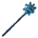
Étoile des tempêtesParticulièrement efficace les matins nuageux.
Provenance
- Fabriquer: Forge noire (niveau 4) à partir de 1 ×
 Massue en flametal, 8 × Flametal, 1 × Iolite · par amélioration: 8 × Flametal, 1 × Iolite
Massue en flametal, 8 × Flametal, 1 × Iolite · par amélioration: 8 × Flametal, 1 × Iolite
 Éveil des morts
Éveil des morts
Sacrifiez un peu de sang pour réveiller les morts. Améliorez le crâne pour faire apparaître plusieurs squelettes et améliorez votre magie du sang pour les renforcer.
Provenance
- Fabriquer: Table de galdr à partir de 10 × Fragments d'os, 16 × Eitr raffiné, 4 ×
 Trophée de squelette · par amélioration: 5 × Fragments d'os, 8 × Eitr raffiné, 2 × Trophée de squelette
Trophée de squelette · par amélioration: 5 × Fragments d'os, 8 × Eitr raffiné, 2 × Trophée de squelette
 Éventreuse
Éventreuse
Éventre tout simplement vos ennemis.
Provenance
- Fabriquer: Forge noire (niveau 3) à partir de 10 × Cendrebois, 8 × Flametal, 2 × Tendon de morgen, 4 × Croc de gueule-d'os · par amélioration: 5 × Cendrebois, 4 × Flametal, 1 × Tendon de morgen, 4 × Croc de gueule-d'os
Utilisation
- Ingrédient pour: Éventreuse des tempêtes, Éventreuse sanglante, Éventreuse sauvage
 Éventreuse des tempêtes
Éventreuse des tempêtes
Ses carreaux balaieront vos ennemis comme un vent mauvais.
Provenance
- Fabriquer: Forge noire (niveau 4) à partir de 1 × Éventreuse, 8 × Flametal, 1 × Iolite · par amélioration: 8 × Flametal, 1 × Iolite
 Éventreuse sanglante
Éventreuse sanglante
Prête à déchirer vos ennemis en morceaux.
Provenance
- Fabriquer: Forge noire (niveau 4) à partir de 1 × Éventreuse, 8 × Flametal, 1 × Pierre-de-sang · par amélioration: 8 × Flametal, 1 × Pierre-de-sang
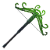
Éventreuse sauvageSi le carreau ne cloue pas votre ennemi sur place, les racines qui surgissent du sol y parviendront sûrement.
Provenance
- Fabriquer: Forge noire (niveau 4) à partir de 1 × Éventreuse, 8 × Flametal, 1 × Jade · par amélioration: 8 × Flametal, 1 × Jade
 Faux
Faux
Le bon outil facilite grandement la tâche.
Provenance
- Fabriquer: Forge (niveau 2) à partir de 1 ×
 Manche de faux, 6 × Argent · par amélioration: 5 × Argent
Manche de faux, 6 × Argent · par amélioration: 5 × Argent
 Fend-les-crânes
Fend-les-crânes
Saura trouver un crâne à fendre dans le plus épais des brouillards.
Provenance
- Fabriquer: Forge noire à partir de 30 × Fer, 15 × Bois d'Yggdrasil, 10 × Eitr raffiné · par amélioration: 15 × Fer, 5 × Bois d'Yggdrasil
 Fléau des jötnars
Fléau des jötnars
Même les géants d'autrefois n'auraient pu résister à la morsure empoisonnée de cette arme.
Provenance
- Fabriquer: Forge noire à partir de 5 × Bois d'Yggdrasil, 15 × Fer, 3 × Sac de bile, 10 × Eitr raffiné · par amélioration: 10 × Fer, 1 × Sac de bile, 1 × Eitr raffiné
 Flèche aiguille
Flèche aiguille
Le point final.
Provenance
 Flèche calcinée
Flèche calcinée
Cette flèche a été taillée dans un fémur calciné, et est aussi dure que du métal.
Provenance
- Fabriquer: 20 × Forge noire à partir de 4 × Os calciné, 2 × Plumes, 8 × Cendrebois
- Coffres: Bateau de pierres (tombe) · 5–11 × · 53 % de chance, Village du Nord · 5–11 × · 53 % de chance, Hutte (Nord) · 5–11 × · 52 % de chance, Camp de bûcherons · 5–11 × · 52 % de chance, Mörk Borg · 5–11 × · 48 % de chance, Épave (Nord) · 3–13 × · 17 % de chance
 Flèche d’argent
Flèche d’argent
Une aiguille pour calmer les âmes inquiètes.
Provenance
 Flèche d'obsidienne
Flèche d'obsidienne
Un fragment de ténèbres.
Provenance
- Fabriquer: 20 × Table de fabrication (niveau 3) à partir de 8 × Bois, 4 ×
 Obsidienne, 2 × Plumes
Obsidienne, 2 × Plumes - Coffres: Stonehenge · 5–10 × · 62 % de chance
 Flèche d'or-sang
Flèche d'or-sang
Une flèche formée de l'un des matériaux les plus solides de ce monde...
Provenance
- Fabriquer: 20 × Forge noire à partir de 1 × Or-sang, 2 × Plumes, 8 × Sapin nordique
 Flèche de givre
Flèche de givre
Un éclat de glace effilé.
Provenance
- Fabriquer: 20 × Table de fabrication (niveau 4) à partir de 8 × Bois, 4 × Obsidienne, 2 × Plumes, 1 × Glande gelée
- Coffres: Cabane en rondins abandonnée · 5–10 × · 44 % de chance, Puits de montagne · 5–10 × · 44 % de chance, Ruine de tour · 5–10 × · 44 % de chance
 Flèche de l'écho
Flèche de l'écho
Un frisson qui vous glace jusqu'aux os.
Provenance
- Fabriquer: Table de galdr (niveau 3) à partir de 10 × Or-sang, 4 × Fils des Nornes, 1 × Essence de givrefeu · par amélioration: 5 × Or-sang, 2 × Fils des Nornes, 1 × Essence de givrefeu
- Cuire: Fonderie à givre à partir de
 Moulage : Flèche de l'écho
Moulage : Flèche de l'écho
 Flèche empoisonnée
Flèche empoisonnée
Une piqûre cuisante de loin.
Provenance
- Fabriquer: 20 × Table de fabrication (niveau 3) à partir de 8 × Bois, 4 × Obsidienne, 2 × Plumes, 2 × Gadoue
- Coffres: Ruine des marais (tour) · 10–15 × · 37 % de chance, Cimetière · 10–15 × · 37 % de chance, Crypte engloutie · 10–15 × · 36 % de chance
 Flèche en bois
Flèche en bois
Une flèche de bois aiguisé.
Provenance
- Fabriquer: 20 × Table de fabrication à partir de 8 × Bois
 Flèche en bronze
Flèche en bronze
Une pointe plus aiguisée que le silex, messagère de la mort.
Provenance
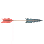
Flèche en carapaceLourde et pointue. Elle va faire mal.
Provenance
- Fabriquer: 20 × Forge noire à partir de 4 ×
 Carapace, 2 × Plumes, 8 × Bois
Carapace, 2 × Plumes, 8 × Bois - Coffres: Trou putride (Morgen) · 3–12 × · 46 % de chance
 Flèche en fer
Flèche en fer
Une flèche à la pointe de fer empennée de plumes sombres.
Provenance
- Fabriquer: 20 × Forge (niveau 2) à partir de 8 × Bois, 1 × Fer, 2 × Plumes
- Coffres: Ruine des marais (tour) · 10–15 × · 37 % de chance, Cimetière · 10–15 × · 37 % de chance, Crypte engloutie · 10–15 × · 36 % de chance
 Flèche en silex
Flèche en silex
Une perceuse de peau avec une tête en silex.
Provenance
- Fabriquer: 20 × Table de fabrication (niveau 2) à partir de 8 × Bois, 2 × Silex, 2 × Plumes
- Coffres: Ruine de combat · 10–20 × · 50 % de chance, Ruine de tour · 5–10 × · 48 % de chance, Ruine · 5–10 × · 48 % de chance, Hutte des marais · 5–10 × · 48 % de chance, Ruine de tour engloutie · 5–10 × · 48 % de chance, Grotte de troll · 5–10 × · 48 % de chance, Ruine de maison en pierre · 5–10 × · 48 % de chance, Chambres funéraires (Forêt noire) · 5–10 × · 46 % de chance, Quête de Hildir : Tombe fumante · 5–10 × · 46 % de chance, Maison en bois abandonnée · 10–20 × · 28–36 % de chance, Ferme abandonnée · 10–20 × · 36 % de chance, Village draugr · 10–20 × · 36 % de chance
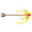
Flêche enflamméeCette flèche brûle ce qu’elle perce.
Provenance
- Fabriquer: 20 × Table de fabrication (niveau 2) à partir de 8 × Bois, 8 × Résine, 2 × Plumes
- Coffres: Bateau de pierres (tombe) · 10–15 × · 39 % de chance
 Grappin
Grappin
Pour effectuer une entrée théâtrale ou une évasion rapide.
Provenance
- Fabriquer: Forge noire à partir de 10 × Bois d'Yggdrasil, 10 × Eitr raffiné, 4 ×
 Mandibule, 1 ×
Mandibule, 1 ×  Crochet
Crochet
 Griffes d'ours maudit
Griffes d'ours maudit
Ces griffes déchirent la chair et les os.
Provenance
- Fabriquer: Forge (niveau 4) à partir de 2 ×
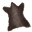
Peau d'ours, 2 × Cage thoracique d'ours maudit, 2 × Sombracier, 4 × Toile de lin · par amélioration: 1 × Peau d'ours, 1 × Cage thoracique d'ours maudit, 1 × Sombracier, 2 × Toile de lin
Cage thoracique d'ours maudit, 2 × Sombracier, 4 × Toile de lin · par amélioration: 1 × Peau d'ours, 1 × Cage thoracique d'ours maudit, 1 × Sombracier, 2 × Toile de lin
 Hache de combat
Hache de combat
Permet aux guerriers de joyeusement fendre des crânes.
Provenance
- Fabriquer: Forge (niveau 2) à partir de 30 × Écorce ancienne, 35 × Fer, 4 × Bouts de cuir · par amélioration: 5 × Écorce ancienne, 15 × Fer
 Hache de combat en bois
Hache de combat en bois
Elle est impressionnante, mais pas autant qu'une véritable hache.
Provenance
- Coffres: Cabane en rondins abandonnée · 10 % de chance, Puits de montagne · 10 % de chance, Ruine de tour · 10 % de chance
 Hache de combat en cristal
Hache de combat en cristal
On voit à travers et peut vous passer à travers.
Provenance
- Fabriquer: Forge (niveau 3) à partir de 40 × Écorce ancienne, 30 × Argent, 10 ×
 Cristal · par amélioration: 5 × Écorce ancienne, 15 × Argent
Cristal · par amélioration: 5 × Écorce ancienne, 15 × Argent
 Hache de combat en sombracier
Hache de combat en sombracier
La dernière chose que verront vos ennemis avant que vous les coupiez en deux.
Provenance
- Fabriquer: Forge (niveau 4) à partir de 10 × Bois précieux, 30 × Sombracier, 5 × Toile de lin · par amélioration: 15 × Sombracier, 5 × Toile de lin
 Hache de givrefeu
Hache de givrefeu
D'un geste de destruction éternelle, réduisez votre environnement en cendre ou gelez tout...
Provenance
- Fabriquer: Forge noire (niveau 4) à partir de 1 ×
 Hache nordique, 20 × Or-sang, 1 × Essence de givrefeu · par amélioration: 10 × Or-sang, 1 × Essence de givrefeu
Hache nordique, 20 × Or-sang, 1 × Essence de givrefeu · par amélioration: 10 × Or-sang, 1 × Essence de givrefeu
 Hache de sang-tonnerre
Hache de sang-tonnerre
Qu'elle pourfende le bois ou la chair, cette hache résonne telle le tonnerre dans toutes les terres.
Provenance
- Fabriquer: Forge noire (niveau 4) à partir de 1 × Hache nordique, 20 × Or-sang, 1 × Essence de sang-tonnerre · par amélioration: 10 × Or-sang, 1 × Essence de sang-tonnerre
 Hache en bois
Hache en bois
Si cette hache permettait de couper du bois, ce serait étrange, non ?
Provenance
- Coffres: Bateau de pierres (tombe) · 8,7 % de chance
 Hache en bronze
Hache en bronze
Une lame brillante et brunie, courbée comme un sourire.
Provenance
- Fabriquer: Forge à partir de 4 × Bois, 8 × Bronze, 2 × Bouts de cuir · par amélioration: 4 × Bronze, 1 × Bouts de cuir
 Hache en fer
Hache en fer
Coupante et puissante, l'ami du bûcheron.
Provenance
- Fabriquer: Forge (niveau 2) à partir de 4 × Bois, 20 × Fer, 2 × Bouts de cuir · par amélioration: 10 × Fer, 1 × Bouts de cuir
 Hache en pierre
Hache en pierre
Une hache grossière pour abattre les arbres.
Provenance
 Hache en silex
Hache en silex
Plus coupant que la pierre.
Provenance
- Fabriquer: Table de fabrication à partir de 4 × Bois, 6 × Silex · par amélioration: 3 × Silex, 2 × Bouts de cuir
 Hache en sombracier
Hache en sombracier
Une hache parfaitement équilibrée, forgée dans un métal sombre aux reflets émeraude.
Provenance
- Fabriquer: Forge (niveau 4) à partir de 6 × Bois précieux, 20 × Sombracier, 5 × Toile de lin · par amélioration: 10 × Sombracier, 5 × Toile de lin
Hache nordique
Une hache finement décorée pour découper finement vos ennemis.
Provenance
- Fabriquer: Forge noire (niveau 4) à partir de 20 × Or-sang, 1 ×
 Moule : hache nordique, 10 × Sapin nordique · par amélioration: 10 × Or-sang, 5 × Sapin nordique
Moule : hache nordique, 10 × Sapin nordique · par amélioration: 10 × Or-sang, 5 × Sapin nordique - Cuire: Fonderie à givre à partir de
 Moulage : hache nordique
Moulage : hache nordique
Utilisation
- Ingrédient pour: Hache de givrefeu, Hache de sang-tonnerre
 Haches des berserkir
Haches des berserkir
Laissez monter votre colère, et préparez-vous au massacre.
Provenance
- Fabriquer: Forge noire (niveau 3) à partir de 15 × Os calciné, 24 × Flametal, 3 × Peau d'asksvin · par amélioration: 15 × Flametal, 1 × Peau d'asksvin
Utilisation
 Haches des berserkir d'hémorragie
Haches des berserkir d'hémorragie
Plus vous vous approchez de la mort, plus vous frapperez fort.
Provenance
- Fabriquer: Forge noire (niveau 4) à partir de 1 × Haches des berserkir, 5 × Flametal, 1 × Pierre-de-sang · par amélioration: 5 × Flametal, 1 × Pierre-de-sang
 Haches des berserkir du tonnerre
Haches des berserkir du tonnerre
Lorsque vous maniez ces haches, vous semez le carnage autour de vous. Thor en personne serait fier de vous.
Provenance
- Fabriquer: Forge noire (niveau 4) à partir de 1 × Haches des berserkir, 5 × Flametal, 1 × Iolite · par amélioration: 5 × Flametal, 1 × Iolite
 Haches des berserkir primitives
Haches des berserkir primitives
Vos instincts les plus primaires prennent le dessus, et la nature qui vous entoure vous vient en aide.
Provenance
- Fabriquer: Forge noire (niveau 4) à partir de 1 × Haches des berserkir, 5 × Flametal, 1 × Jade · par amélioration: 5 × Flametal, 1 × Jade
 Haches primitives
Haches primitives
Armes puissantes d'une époque lointaine, lorsque le monde était encore jeune et incomplet...
Provenance
- Fabriquer: Table de fabrication à partir de 4 × Bois, 1 ×
 Tête de hache curieuse, 1 ×
Tête de hache curieuse, 1 ×  Tête de hache mystérieuse · par amélioration: 2 × Bois, 2 × Bouts de cuir
Tête de hache mystérieuse · par amélioration: 2 × Bois, 2 × Bouts de cuir
 Harpon abyssal
Harpon abyssal
La fureur de l'océan.
Provenance
- Fabriquer: Table de fabrication (niveau 2) à partir de 8 × Bois précieux, 30 ×
 Chitine, 3 × Bouts de cuir
Chitine, 3 × Bouts de cuir
 Himmin afl
Himmin afl
Ce n'est peut-être pas un marteau, mais Thor approuverait cette arme.
Provenance
- Fabriquer: Forge noire à partir de 10 × Bois d'Yggdrasil, 15 × Eitr raffiné, 5 × Argent, 2 × Mandibule · par amélioration: 15 × Eitr raffiné, 5 × Argent, 2 × Mandibule
 Houe
Houe
Un outil de fermier pour travailler la terre.
Provenance
 Klossen
Klossen
Si la force de votre coup ne suffit pas à terrasser vos ennemis, alors les racines primitives sauront les retenir.
Provenance
- Fabriquer: Forge noire (niveau 4) à partir de 1 × Massue en flametal, 8 × Flametal, 1 × Jade · par amélioration: 8 × Flametal, 1 × Jade
 Krom
Krom
Une arme aussi mortelle que brillante ; et elle est très brillante.
Provenance
- Fabriquer: Forge noire à partir de 30 × Fer, 20 × Bronze, 5 ×
 Peau écailleuse · par amélioration: 15 × Fer, 10 × Bronze, 5 × Peau écailleuse
Peau écailleuse · par amélioration: 15 × Fer, 10 × Bronze, 5 × Peau écailleuse
 Lance de givrefeu
Lance de givrefeu
Trempée dans des flammes glacées, cette lance annonce une mort certaine.
Provenance
- Fabriquer: Forge noire (niveau 4) à partir de 1 ×
 Lance nordique, 20 × Or-sang, 1 × Essence de givrefeu · par amélioration: 10 × Or-sang, 1 × Essence de givrefeu
Lance nordique, 20 × Or-sang, 1 × Essence de givrefeu · par amélioration: 10 × Or-sang, 1 × Essence de givrefeu
 Lance de sang-tonnerre
Lance de sang-tonnerre
Qu'elle frappe comme l'éclair, vive et puissante.
Provenance
- Fabriquer: Forge noire (niveau 4) à partir de 1 × Lance nordique, 20 × Or-sang, 1 × Essence de sang-tonnerre · par amélioration: 10 × Or-sang, 1 × Essence de sang-tonnerre
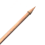
Lance en boisAussi pointue qu'une véritable lance, si les véritables lances étaient faites de bois.
Provenance
- Coffres: Ruine de tour · 11 % de chance, Ruine · 11 % de chance, Hutte des marais · 11 % de chance, Ruine de tour engloutie · 11 % de chance, Grotte de troll · 11 % de chance, Ruine de maison en pierre · 11 % de chance
 Lance en bronze
Lance en bronze
Une lance robuste avec un fer en bronze poli.
Provenance
- Fabriquer: Forge à partir de 5 × Bois, 6 × Bronze, 2 × Peau de cerf · par amélioration: 3 × Bois, 4 × Bronze, 1 × Peau de cerf
 Lance en carapace
Lance en carapace
Aiguisée à la perfection, cette lance est assurément mortelle.
Provenance
- Fabriquer: Forge noire à partir de 10 × Bois d'Yggdrasil, 4 × Carapace, 2 × Mandibule · par amélioration: 5 × Bois d'Yggdrasil, 4 × Carapace, 1 × Mandibule
 Lance en crocs
Lance en crocs
Même dans la mort, la dent du loup cherche la chair fraîche.
Provenance
- Fabriquer: Forge (niveau 3) à partir de 10 × Écorce ancienne, 4 ×
 Croc de loup, 2 × Bouts de cuir, 2 × Argent · par amélioration: 5 × Écorce ancienne, 2 × Croc de loup, 1 × Bouts de cuir, 1 × Argent
Croc de loup, 2 × Bouts de cuir, 2 × Argent · par amélioration: 5 × Écorce ancienne, 2 × Croc de loup, 1 × Bouts de cuir, 1 × Argent
 Lance en écorce ancienne
Lance en écorce ancienne
Malgré son apparence usée, cette lance est solide et parfaitement équilibrée.
Provenance
- Fabriquer: Forge (niveau 3) à partir de 4 × Peau de troll, 10 × Fer, 10 × Écorce ancienne · par amélioration: 1 × Peau de troll, 5 × Fer, 5 × Écorce ancienne
 Lance en silex
Lance en silex
L’œil marque la cible, le bras envoie le message.
Provenance
- Fabriquer: Table de fabrication à partir de 5 × Bois, 10 × Silex, 2 × Bouts de cuir · par amélioration: 3 × Bois, 5 × Silex, 1 × Bouts de cuir
Lance nordique
Une opportunité en or pour frapper.
Provenance
- Fabriquer: Forge noire (niveau 4) à partir de 20 × Or-sang, 1 ×
 Moule : lance nordique, 10 × Sapin nordique · par amélioration: 10 × Or-sang, 5 × Sapin nordique
Moule : lance nordique, 10 × Sapin nordique · par amélioration: 10 × Or-sang, 5 × Sapin nordique - Cuire: Fonderie à givre à partir de
 Moulage : lance nordique
Moulage : lance nordique
Utilisation
- Ingrédient pour: Lance de givrefeu, Lance de sang-tonnerre
 Lanterne dvergr
Lanterne dvergr
Parce qu'une simple torche, c'est vraiment passé de mode.
Provenance
- Fabriquer: Forge noire à partir de 2 × Bronze, 1 × Cœur de surtling, 1 × Cristal
- Ramasser: Fouille dvergr, Tour de garde dvergr, Ruine de tour calcinée, Phare dvergr, La Reine
Utilisation
- Matériau de construction pour: Lanterne murale dvergr, Lanterne sur pied dvergr
 Mande-esprits
Mande-esprits
Invoque une aide venue d'ailleurs. Ce n'est qu'une goutte de sang...
Provenance
- Fabriquer: Table de galdr (niveau 3) à partir de 8 × Branche gelée, 5 × Fils des Nornes, 1 ×
 Trophée d'élan · par amélioration: 4 × Branche gelée, 2 × Fils des Nornes
Trophée d'élan · par amélioration: 4 × Branche gelée, 2 × Fils des Nornes - Cuire: Fonderie à givre à partir de
 Moulage : Mande-esprits
Moulage : Mande-esprits
 Marchebrume
Marchebrume
Sa faible lueur semble trancher la brume.
Provenance
- Fabriquer: Forge noire à partir de 3 × Bois précieux, 15 × Fer, 10 × Eitr raffiné, 3 ×
 Feu-follet · par amélioration: 10 × Fer, 5 × Eitr raffiné, 1 × Feu-follet
Feu-follet · par amélioration: 10 × Fer, 5 × Eitr raffiné, 1 × Feu-follet
 Marteau
Marteau
Avec ceci dans vos mains, vous pouvez faire surgir de grandes salles et des fortifications majestueuses.
Provenance
 Masse de fer
Masse de fer
Un marteau puissant, digne d'un champion.
Provenance
- Fabriquer: Forge (niveau 2) à partir de 10 × Écorce ancienne, 30 × Fer, 4 × Chair d'Ymir, 1 ×
 Trophée de draugr élite · par amélioration: 2 × Écorce ancienne, 15 × Fer, 2 × Chair d'Ymir
Trophée de draugr élite · par amélioration: 2 × Écorce ancienne, 15 × Fer, 2 × Chair d'Ymir
 Masse de givrefeu
Masse de givrefeu
Est-ce que c'est si froid que ça brûle ou si chaud que ça gèle ?
Provenance
- Fabriquer: Forge noire (niveau 4) à partir de 1 ×
 Masse nordique, 20 × Or-sang, 1 × Essence de givrefeu · par amélioration: 10 × Or-sang, 1 × Essence de givrefeu
Masse nordique, 20 × Or-sang, 1 × Essence de givrefeu · par amélioration: 10 × Or-sang, 1 × Essence de givrefeu
 Masse de sang-tonnerre
Masse de sang-tonnerre
Cette arme frappe toujours juste, et l'écho de ses coups se répand dans le monde entier...
Provenance
- Fabriquer: Forge noire (niveau 4) à partir de 1 × Masse nordique, 20 × Or-sang, 1 × Essence de sang-tonnerre · par amélioration: 10 × Or-sang, 1 × Essence de sang-tonnerre
 Masse en bois
Masse en bois
Elle devrait faire plus mal que ça.
Provenance
- Coffres: Ruine des marais (tour) · 20 % de chance, Cimetière · 20 % de chance
Masse nordique
Grâce à cette arme, vos coups seront aussi puissants que ceux d'un troll.
Provenance
- Fabriquer: Forge noire (niveau 4) à partir de 20 × Or-sang, 1 ×
 Moule : masse nordique, 10 × Sapin nordique · par amélioration: 10 × Or-sang, 5 × Sapin nordique
Moule : masse nordique, 10 × Sapin nordique · par amélioration: 10 × Or-sang, 5 × Sapin nordique - Cuire: Fonderie à givre à partir de
 Moulage : masse nordique
Moulage : masse nordique
Utilisation
- Ingrédient pour: Masse de givrefeu, Masse de sang-tonnerre
 Masse-sang
Masse-sang
Le sang imprègne presque entièrement cette masse, et elle en demande toujours plus.
Provenance
- Fabriquer: Forge noire (niveau 4) à partir de 1 × Massue en flametal, 8 × Flametal, 1 × Pierre-de-sang · par amélioration: 8 × Flametal, 1 × Pierre-de-sang
 Massue de bronze
Massue de bronze
Une migraine au bout d'un manche.
Provenance
- Fabriquer: Forge à partir de 4 × Bois, 8 × Bronze, 3 × Bouts de cuir · par amélioration: 4 × Bronze
 Massue de fer
Massue de fer
Une boule de fer de la taille d'un poing sur un manche en bois.
Provenance
- Fabriquer: Forge (niveau 2) à partir de 4 × Bois, 20 × Fer, 3 × Bouts de cuir · par amélioration: 10 × Fer
 Massue de givrefeu
Massue de givrefeu
Que sont ces éclats qui volent quand la massue touche sa cible ? Des étincelles ou des bouts de glace ?
Provenance
- Fabriquer: Forge noire (niveau 4) à partir de 1 ×
 Massue nordique, 20 × Or-sang, 1 × Essence de givrefeu · par amélioration: 10 × Or-sang, 1 × Essence de givrefeu
Massue nordique, 20 × Or-sang, 1 × Essence de givrefeu · par amélioration: 10 × Or-sang, 1 × Essence de givrefeu
 Massue de sang-tonnerre
Massue de sang-tonnerre
Une arme pouvant presque rivaliser avec le dieu du tonnerre...
Provenance
- Fabriquer: Forge noire (niveau 4) à partir de 1 × Massue nordique, 20 × Or-sang, 1 × Essence de sang-tonnerre · par amélioration: 10 × Or-sang, 1 × Essence de sang-tonnerre
 Massue en bois
Massue en bois
On pourrait se demander pourquoi la façonner plutôt que d'utiliser un bâton.
Provenance
- Coffres: Village draugr · 1–4 × · 32 % de chance, Ruine de combat · 6 % de chance
Massue en flametal
Du flametal dense, hérissé de pointes, parfait pour écraser les visages ennemis.
Provenance
- Fabriquer: Forge noire (niveau 3) à partir de 10 × Os calciné, 15 × Flametal, 5 × Soufre, 3 × Peau d'asksvin · par amélioration: 5 × Os calciné, 8 × Flametal, 3 × Soufre, 2 × Peau d'asksvin
Utilisation
- Ingrédient pour: Étoile des tempêtes, Klossen, Masse-sang
Massue nordique
Frappez fort et frappez vite pour ne laisser aucun répit à vos adversaires.
Provenance
- Fabriquer: Forge noire (niveau 4) à partir de 20 × Or-sang, 1 ×
 Moule : massue nordique, 10 × Sapin nordique · par amélioration: 10 × Or-sang, 5 × Sapin nordique
Moule : massue nordique, 10 × Sapin nordique · par amélioration: 10 × Or-sang, 5 × Sapin nordique - Cuire: Fonderie à givre à partir de
 Moulage : massue nordique
Moulage : massue nordique
Utilisation
- Ingrédient pour: Massue de givrefeu, Massue de sang-tonnerre
 Nidhögg
Nidhögg
Du nom du dragon maléfique qui rôde dans les racines de l'arbre-monde, cette épée présage le malheur pour quiconque croise son chemin.
Provenance
- Fabriquer: Forge noire (niveau 3) à partir de 3 × Os calciné, 12 × Flametal, 2 × Peau d'asksvin · par amélioration: 10 × Flametal, 2 × Peau d'asksvin
Utilisation
- Ingrédient pour: Nidhögg le primitif, Nidhögg le sanglant, Nidhögg le tonitruant
 Nidhögg le primitif
Nidhögg le primitif
Enchevêtrez vos ennemis dans des racines, comme la créature qui donne son nom à cette lame.
Provenance
 Nidhögg le sanglant
Nidhögg le sanglant
Si vous saignez, vos adversaires n'y manqueront pas non plus.
Provenance
- Fabriquer: Forge noire (niveau 4) à partir de 1 × Nidhögg, 6 × Flametal, 1 × Pierre-de-sang · par amélioration: 6 × Flametal, 1 × Pierre-de-sang
 Nidhögg le tonitruant
Nidhögg le tonitruant
La puissance de la foudre danse le long de la lame de cette épée, promesse de la souffrance à venir.
Provenance
 Pattes de l'ours
Pattes de l'ours
Faites pour déchirer et déchiqueter.
Provenance
- Fabriquer: Table de fabrication (niveau 2) à partir de 2 × Peau d'ours, 2 ×
 Patte d'ours, 4 × Bouts de cuir · par amélioration: 2 × Peau d'ours, 2 × Bouts de cuir
Patte d'ours, 4 × Bouts de cuir · par amélioration: 2 × Peau d'ours, 2 × Bouts de cuir
 Pelle à neige
Pelle à neige
Très utile pour déblayer la neige la plus épaisse.
Provenance
- Fabriquer: Forge noire (niveau 3) à partir de 5 × Bois précieux, 4 × Flametal, 2 × Braises · par amélioration: 1 × Bois précieux, 10 × Flametal
 Pioche de bois de cerf
Pioche de bois de cerf
Cet outil est assez solide pour fissurer les roches les plus résistantes.
Provenance
 Pioche en bronze
Pioche en bronze
Une bonne pioche faite de bronze.
Provenance
- Fabriquer: Forge à partir de 3 × Bois robuste, 10 × Bronze · par amélioration: 1 × Bois robuste, 5 × Bronze
 Pioche en fer
Pioche en fer
Un outil solide fait de fer trempé.
Provenance
- Fabriquer: Forge (niveau 2) à partir de 3 × Bois robuste, 20 × Fer · par amélioration: 1 × Bois robuste, 10 × Fer
 Pioche en sombracier
Pioche en sombracier
Une pioche solide conçue dans un métal sombre et brillant.
Provenance
- Fabriquer: Forge (niveau 2) à partir de 3 × Bois d'Yggdrasil, 25 × Sombracier · par amélioration: 1 × Bois d'Yggdrasil, 15 × Sombracier
 Plateau de service
Plateau de service
Servez la nourriture et les boissons de votre choix, et impressionnez vos invités avec un délicieux festin.
Provenance
- Acheter: Sorcière du marécage · 140 pièces
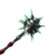
Porc-épicUne arme mortelle hérissée de pics acérés.
Provenance
- Fabriquer: Forge (niveau 4) à partir de 5 × Bois précieux, 20 × Fer, 5 ×
 Aiguille, 10 × Toile de lin · par amélioration: 2 × Fer, 2 × Aiguille
Aiguille, 10 × Toile de lin · par amélioration: 2 × Fer, 2 × Aiguille
 Pourfendeuse
Pourfendeuse
Pourfendez vos ennemis en plein cœur.
Provenance
- Fabriquer: Forge noire (niveau 3) à partir de 10 × Cendrebois, 6 × Flametal, 2 × Peau d'asksvin, 3 × Croc de gueule-d'os · par amélioration: 5 × Cendrebois, 6 × Flametal, 1 × Peau d'asksvin, 3 × Croc de gueule-d'os
Utilisation
- Ingrédient pour: Pourfendeuse des tempêtes, Pourfendeuse la primitive, Pourfendeuse la sanglante
 Pourfendeuse des tempêtes
Pourfendeuse des tempêtes
Que le fracas du tonnerre fende l'air.
Provenance
- Fabriquer: Forge noire (niveau 4) à partir de 1 × Pourfendeuse, 6 × Flametal, 1 × Iolite · par amélioration: 6 × Flametal, 1 × Iolite
 Pourfendeuse la primitive
Pourfendeuse la primitive
Les forces de la nature jaillissent de la terre chaque fois que cette lance frappe.
Provenance
- Fabriquer: Forge noire (niveau 4) à partir de 1 × Pourfendeuse, 6 × Flametal, 1 × Jade · par amélioration: 6 × Flametal, 1 × Jade
 Pourfendeuse la sanglante
Pourfendeuse la sanglante
Chaque bataille exige un modeste sacrifice...
Provenance
- Fabriquer: Forge noire (niveau 4) à partir de 1 × Pourfendeuse, 6 × Flametal, 1 × Pierre-de-sang · par amélioration: 6 × Flametal, 1 × Pierre-de-sang
 Projectile d'or-sang
Projectile d'or-sang
Vos adversaires n'auront plus la moindre chance lorsque ce projectile trouvera sa cible.
Provenance
- Fabriquer: 20 × Table d'artisan à partir de 10 × Sapin nordique, 1 × Or-sang
 Projectile en bois
Projectile en bois
De solides projectiles de bois qui fournissent une bonne défense face aux ennemis.
Provenance
- Fabriquer: 20 × Table d'artisan à partir de 5 × Bois robuste, 2 × Plumes
 Projectile en flametal
Projectile en flametal
Forgé avec l'un des métaux les plus solides de Valheim, ce projectile saura repousser vos ennemis.
Provenance
- Fabriquer: 20 × Table d'artisan à partir de 10 × Cendrebois, 1 × Flametal
 Projectile en sombracier
Projectile en sombracier
Ces projectiles épais peuvent transpercer le cuir des ennemis les plus coriaces.
Provenance
- Fabriquer: 20 × Table d'artisan à partir de 10 × Bois, 1 × Sombracier
 Rasoir abyssal
Rasoir abyssal
Un couteau venu des profondeurs.
Provenance
- Fabriquer: Table de fabrication (niveau 2) à partir de 4 × Bois précieux, 20 × Chitine, 2 × Bouts de cuir · par amélioration: 10 × Chitine
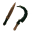
Sköll et HatiUn coup pour les traîtres, deux coups pour ceux que vous haïssez plus que tout.
Provenance
- Fabriquer: Forge noire à partir de 4 × Bois précieux, 10 × Fer, 10 × Sombracier · par amélioration: 4 × Fer, 4 × Sombracier
 Torche
Torche
Elle apporte lumière et chaleur, repoussant les ténèbres.
Provenance
- Fabriquer: sans établi à partir de 1 × Bois, 1 × Résine
- Coffres: Bateau de pierres (tombe) · 53 % de chance, Village du Nord · 53 % de chance, Hutte (Nord) · 52 % de chance, Camp de bûcherons · 52 % de chance, Ruine de combat · 50 % de chance, Maison en bois abandonnée · 28–36 % de chance, Ferme abandonnée · 36 % de chance, Village draugr · 36 % de chance
 Vengeance nordique
Vengeance nordique
Un flocon de neige emprisonné, dont les motifs infinis émergent de l'intérieur...
Provenance
- Fabriquer: Table de galdr (niveau 3) à partir de 10 × Glace, 5 × Fils des Nornes, 1 ×
 Trophée d'Hexen · par amélioration: 5 × Glace, 2 × Fils des Nornes
Trophée d'Hexen · par amélioration: 5 × Glace, 2 × Fils des Nornes - Cuire: Fonderie à givre à partir de
 Moulage : Vengeance nordique
Moulage : Vengeance nordique